QIIME2¶
Nearly all of this documentation is taken directly from lecture and text guides from class. QIIME2 instructions to process the “moving pictures” dataset are from Dr. Shareef Dabdoub’s guide found on Carmen. If you’d like to read up more about this dataset, they can be found here.
For M8161 students, you’ll want to copy the two examples files from the project directory on scratch to your home directory!
# Copy sequencing data
cp -r /fs/project/PAS1573/week3_16S/qiime2/moving_pictures/single_end $HOME
# Copy the metadata file over
cp /fs/project/PAS1573/week3_16S/qiime2/moving_pictures/mp_sample_metadata.tsv $HOME
Please check out the OSC/linux intro if you have any questions/need help for how to copy files from one location to another.
For the rest of this walkthrough, we’ll be in our $HOME directory. You’ll notice that references to the moving pictures data often start with “moving_pictures/…” That’s because we’re using our relative location to point QIIME2 to where files are located.
One final note: For M8161 students, we went over how to install QIIME2 during Shareef’s lecture. Look at that. For the eMicro crowd, you can access a QIIME2 (version 2019.7) Singularity container, like so:
/users/PAS1117/osu9664/QIIME2-2019.7.sif <rest-of-command>
Every single example below used this QIIME2 container to test. Simply substitute “qiime” for “QIIME2-2019.7.sif” (as above) and everything should work. If something does not work, please notify Ben so he can fix it promptly.
Data Import¶
We start by importing our single end sequencing data into a QIIME2-compatible format, the *.qza.
$ qiime tools import --type EMPSingleEndSequences --input-path moving_pictures/single_end/ --output-path emp-single-end-sequences.qza
Imported moving_pictures/single_end/ as EMPSingleEndDirFmt to emp-single-end-sequences.qza
Remember, QIIME2 thinks in terms of methods –> artifacts, which in this case is EMPSingleEndSequences, and visualizers (not shown here, yet), in visualizations.
Demultiplexing¶
Next we’ll demultiplex the sequences, that is, separate out each sample within the sequencing data. We’ll be using the barcode information from the metadata table.
$ qiime demux emp-single --i-seqs emp-single-end-sequences.qza --m-barcodes-file moving_pictures/mp_sample_metadata.tsv --m-barcodes-column barcode-sequence --o-per-sample-sequences demux.qza --o-error-correction-details demux-details.qza
Saved SampleData[SequencesWithQuality] to: demux.qza
Saved ErrorCorrectionDetails to: demux-details.qza
You should generate two files. Notice the qza format. Artifacts.
After demultiplexing, we need to summarize the data to visualize what we got!
Summarize¶
$ qiime demux summarize --i-data demux.qza --o-visualization demux.qzv
Saved Visualization to: demux.qzv
Notice how we now have a *.qzv file? This is QIIME2’s visualization file that can be uploaded to the QIIME2 view page. Go ahead and try it and see what happens.
{kind=link}
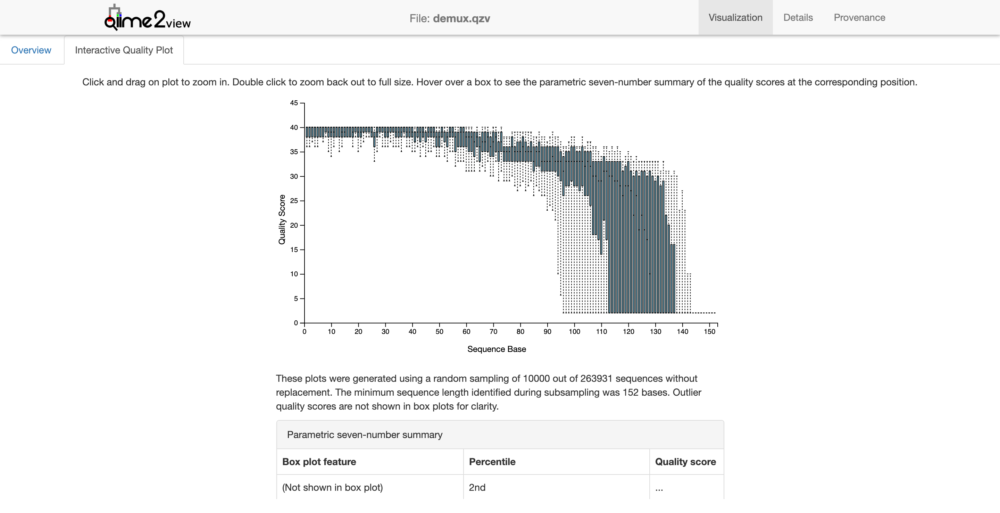
Quality Control and Creating the Feature Table¶
We need to do a little quality control here by filtering according to q-score.
$ qiime quality-filter q-score --i-demux demux.qza --o-filtered-sequences demux-filtered.qza --o-filter-stats demux-filter-stats.qza
Saved SampleData[SequencesWithQuality] to: demux-filtered.qza
Saved QualityFilterStats to: demux-filter-stats.qza
Next we’re going to use deblur to clean up our 16S data. There’s two major ways of cleaning up sequencing data in QIIME2: Dada2 and Deblur. What both of these tools do is help us figure out what is true sequence diversity and what are sequencing errors. They are both good methods though they have their slight advantages and disadvantages.
$ qiime deblur denoise-16S --i-demultiplexed-seqs demux-filtered.qza --p-trim-length 120 --o-representative-sequences rep-seqs-deblur.qza --o-table table-deblur.qza --p-sample-stats --o-stats deblur-stats.qza
Saved FeatureTable[Frequency] to: table-deblur.qza
Saved FeatureData[Sequence] to: rep-seqs-deblur.qza
Saved DeblurStats to: deblur-stats.qza
Now for the FeatureTable and FeatureData summaries.
$ qiime feature-table summarize --i-table table-deblur.qza --o-visualization table-deblur.qzv --m-sample-metadata-file moving_pictures/mp_sample_metadata.tsv
Saved Visualization to: table-deblur.qzv
$ qiime feature-table tabulate-seqs --i-data rep-seqs-deblur.qza --o-visualization rep-seqs-deblur.qzv
Saved Visualization to: rep-seqs-deblur.qzv
Let’s take a look at the visualizations.
{kind=link}
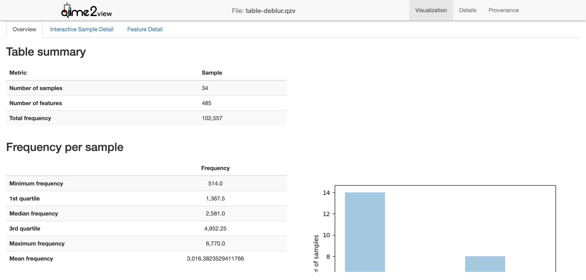
This gives a basic overview of the deblur results.
{kind=link}
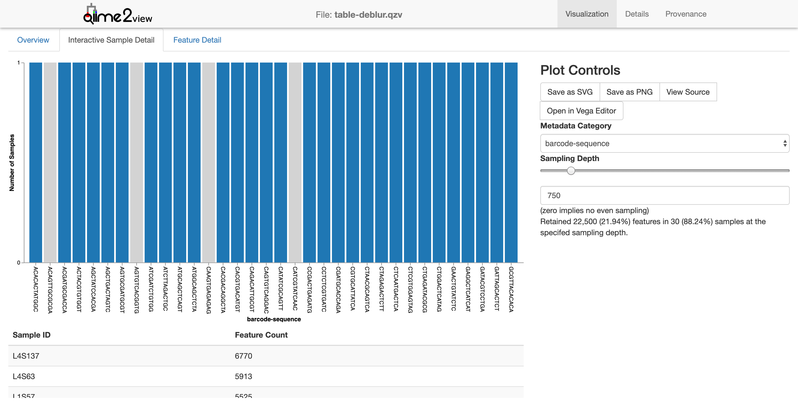
The interactive sample detail gives us a little more to work with. Notice how I’ve adjusted the sampling depth slider (right side) to 750. Samples with a sequencing depth below this level would be excluded from the analysis. This might not make immediate sense since barcodes are a bit abstract. Instead, let’s adjust the metadata category to “body site” and keep the sequencing depth to 750.
{kind=link}
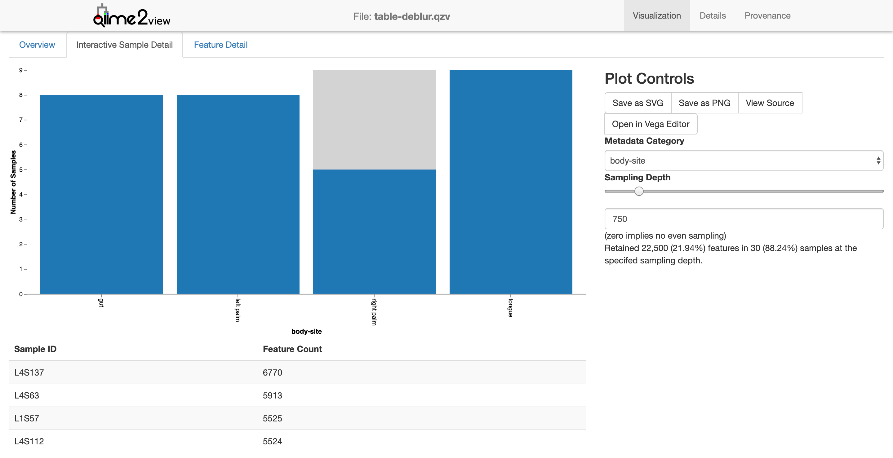
Now one can see what effect a sampling depth of 750 would have: only 5 of the 9 right palm samples would be retained.
Let’s finally take a look at the representative sequences
{kind=link}
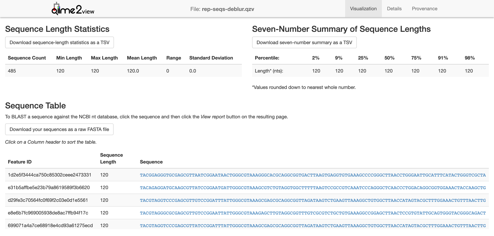
Now, we need to generate a tree for phylogenetic diversity analyses. Why? Well, if we want to calculate any alpha or beta diversity metrics that are phylogenetics-based, we’ll need this tree. (Spoiler: Notice that we’ll be using “core-metrics-phylogenetic” for QIIME2 diversity…) We won’t be going into why we’re using MAFFT at this point. We’ll leave that as bonus.
$ qiime phylogeny align-to-tree-mafft-fasttree --i-sequences rep-seqs-deblur.qza --o-alignment aligned-rep-seqs.qza --o-masked-alignment masked-aligned-rep-seqs.qza --o-tree unrooted-tree.qza --o-rooted-tree rooted-tree.qza
Saved FeatureData[AlignedSequence] to: aligned-rep-seqs.qza
Saved FeatureData[AlignedSequence] to: masked-aligned-rep-seqs.qza
Saved Phylogeny[Unrooted] to: unrooted-tree.qza
Saved Phylogeny[Rooted] to: rooted-tree.qza
Saved FeatureData[AlignedSequence] to: aligned-rep-seqs.qza
Alpha and Beta Diversity Analyses¶
Alpha diversity can be measured in a few ways. QIIME2 supports many of these. The ones we’ll be looking at are:
Shannon’s diversity index
Observed OTUs
Faith’s phylogenetic diversity
Evenness
For Beta diversity:
Jaccard distance
Bray-Curtise distance
unweighted UniFrac distance
weighted UniFrac distance
$ qiime diversity core-metrics-phylogenetic --i-phylogeny rooted-tree.qza --i-table table-deblur.qza --p-sampling-depth 850 --m-metadata-file moving_pictures/mp_sample_metadata.tsv --output-dir core-metrics-results-850
Saved FeatureTable[Frequency] to: core-metrics-results-850/rarefied_table.qza
Saved SampleData[AlphaDiversity] % Properties('phylogenetic') to: core-metrics-results-850/faith_pd_vector.qza
Saved SampleData[AlphaDiversity] to: core-metrics-results-850/observed_otus_vector.qza
Saved SampleData[AlphaDiversity] to: core-metrics-results-850/shannon_vector.qza
Saved SampleData[AlphaDiversity] to: core-metrics-results-850/evenness_vector.qza
Saved DistanceMatrix % Properties('phylogenetic') to: core-metrics-results-850/unweighted_unifrac_distance_matrix.qza
Saved DistanceMatrix % Properties('phylogenetic') to: core-metrics-results-850/weighted_unifrac_distance_matrix.qza
Saved DistanceMatrix to: core-metrics-results-850/jaccard_distance_matrix.qza
Saved DistanceMatrix to: core-metrics-results-850/bray_curtis_distance_matrix.qza
Saved PCoAResults to: core-metrics-results-850/unweighted_unifrac_pcoa_results.qza
Saved PCoAResults to: core-metrics-results-850/weighted_unifrac_pcoa_results.qza
Saved PCoAResults to: core-metrics-results-850/jaccard_pcoa_results.qza
Saved PCoAResults to: core-metrics-results-850/bray_curtis_pcoa_results.qza
Saved Visualization to: core-metrics-results-850/unweighted_unifrac_emperor.qzv
Saved Visualization to: core-metrics-results-850/weighted_unifrac_emperor.qzv
Saved Visualization to: core-metrics-results-850/jaccard_emperor.qzv
Saved Visualization to: core-metrics-results-850/bray_curtis_emperor.qzv
Wow. That was a lot of outputs. Always been aware of what you’re looking at. The filename has what kind of analysis was performed, but it’s up to you to figure out what it means!
Let’s look at a few of the results:
$ qiime diversity alpha-group-significance --i-alpha-diversity core-metrics-results-850/faith_pd_vector.qza --m-metadata-file moving_pictures/mp_sample_metadata.tsv --o-visualization core-metrics-results-850/faith_pd_group-significance.qzv
Saved Visualization to: core-metrics-results-850/faith_pd_group-significance.qzv
{kind=link}
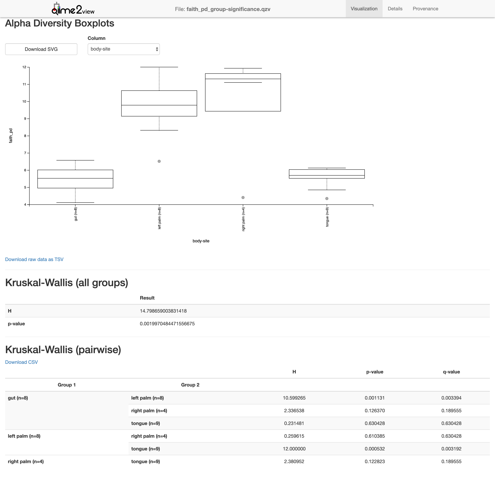
$ qiime diversity alpha-group-significance --i-alpha-diversity core-metrics-results-850/evenness_vector.qza --m-metadata-file moving_pictures/mp_sample_metadata.tsv --o-visualization core-metrics-results-850/evenness-group-significance.qzv
Saved Visualization to: core-metrics-results-850/evenness-group-significance.qzv
{kind=link}
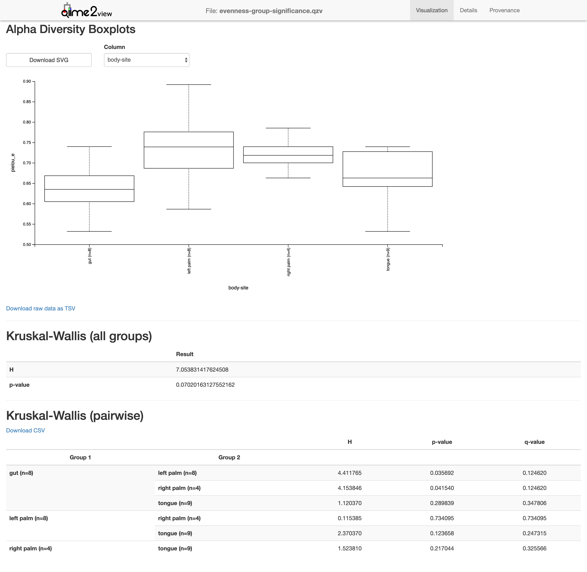
Next we’re going to look at beta diversity, looking to compare different metadata.
Body site
$ qiime diversity beta-group-significance --i-distance-matrix core-metrics-results-850/unweighted_unifrac_distance_matrix.qza --m-metadata-file moving_pictures/mp_sample_metadata.tsv --m-metadata-column body-site --o-visualization core-metrics-results-850/unweighted_unifrac-body-site-sig.qzv --p-pairwise
Saved Visualization to: core-metrics-results-850/unweighted_unifrac-body-site-sig.qzv
{kind=link}
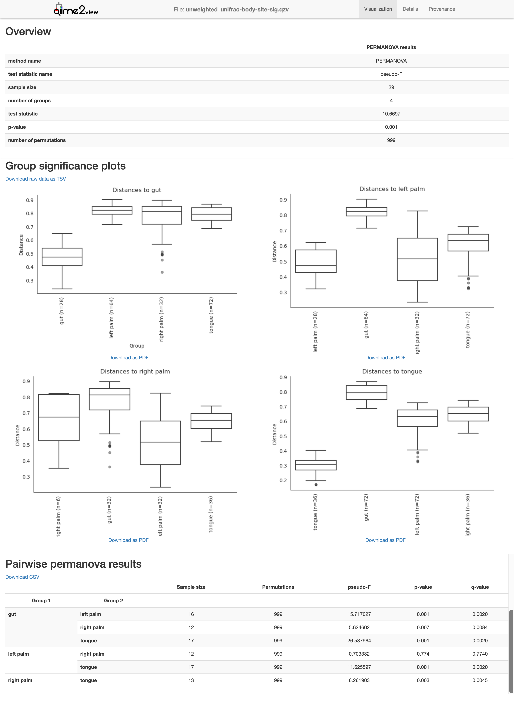
Subject
$ qiime diversity beta-group-significance --i-distance-matrix core-metrics-results-850/unweighted_unifrac_distance_matrix.qza --m-metadata-file moving_pictures/mp_sample_metadata.tsv --m-metadata-column subject --o-visualization core-metrics-results-850/unweighted_unifrac-subject-sig.qzv --p-pairwise
Saved Visualization to: core-metrics-results-850/unweighted_unifrac-subject-sig.qzv
Longitudinal
$ qiime emperor plot --i-pcoa core-metrics-results-850/unweighted_unifrac_pcoa_results.qza --m-metadata-file moving_pictures/mp_sample_metadata.tsv --p-custom-axes days-since-experiment-start --o-visualization core-metrics-results-850/unweighted_unifrac-emperor-dses.qzv
Saved Visualization to: core-metrics-results-850/unweighted_unifrac-emperor-dses.qzv
Alpha rarefaction
$ qiime diversity alpha-rarefaction --i-table table-deblur.qza --i-phylogeny rooted-tree.qza --p-max-depth 4000 --m-metadata-file moving_pictures/mp_sample_metadata.tsv --o-visualization alpha-rarefaction.qzv
Saved Visualization to: alpha-rarefaction.qzv
{kind=link}
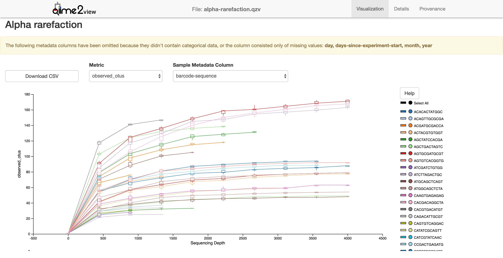
{kind=link}
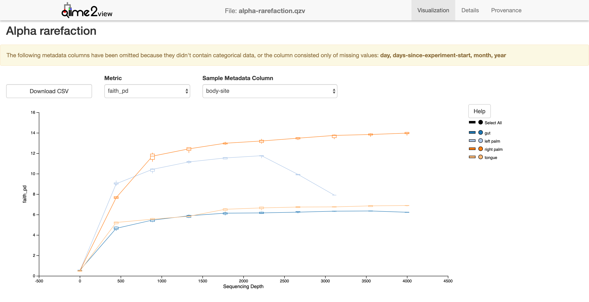
Next we’ll need to assign taxonomy. For this we’ll need a classifier. In this example, we’ll use one pre-trained on the GreenGenes ribosomal database at 99%. If you haven’t downloaded it, run the 1st line, which will download “gg-13-8-99-515-806-nb-classifier.qza” to the directory you’re in.
$ wget https://data.qiime2.org/2018.2/common/gg-13-8-99-515-806-nb-classifier.qza
$ qiime feature-classifier classify-sklearn --i-classifier gg-13-8-99-515-806-nb-classifier.qza --i-reads rep-seqs-deblur.qza --o-classification taxonomy-deblur.qza
Saved FeatureData[Taxonomy] to: taxonomy-deblur.qza
Next we’ll need to tabulate this data.
$ qiime metadata tabulate --m-input-file taxonomy-deblur.qza --o-visualization taxonomy.qzv
Saved Visualization to: taxonomy.qzv
{kind=link}
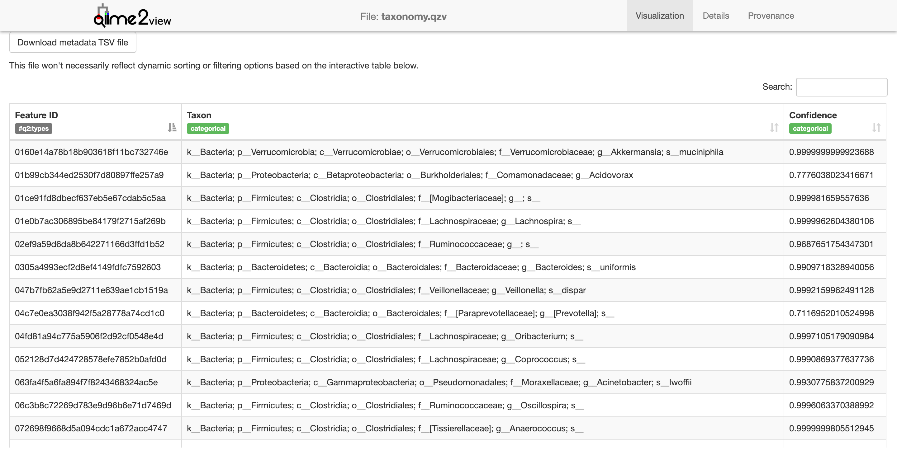
This visualization is a little lite on visualization - it just shows a list of each taxon identified in the samples. Let’s make a bar plot of this, it’s easier to see.
$ qiime taxa barplot --i-table table-deblur.qza --i-taxonomy taxonomy-deblur.qza --m-metadata-file moving_pictures/mp_sample_metadata.tsv --o-visualization taxa-bar-plots.qzv
Saved Visualization to: taxa-bar-plots.qzv
{kind=link}
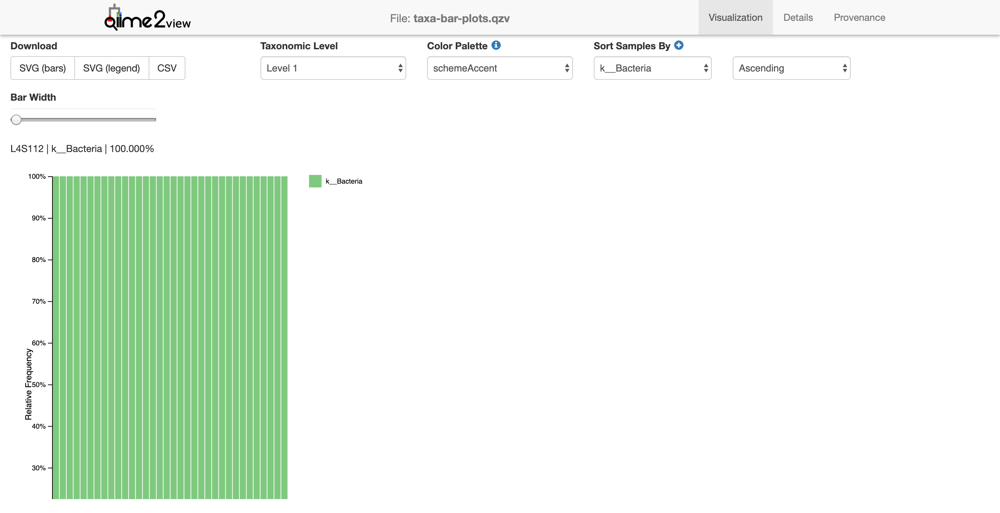
This view shows the taxonomy in a barplot. Don’t worry if it’s all green. Notice that there’s only 1 taxonomic level shown, identifying only the kingdom Bacteria (note the k__ preceeding the Bacteria in the legend). Let’s look at the next level down
{kind=link}
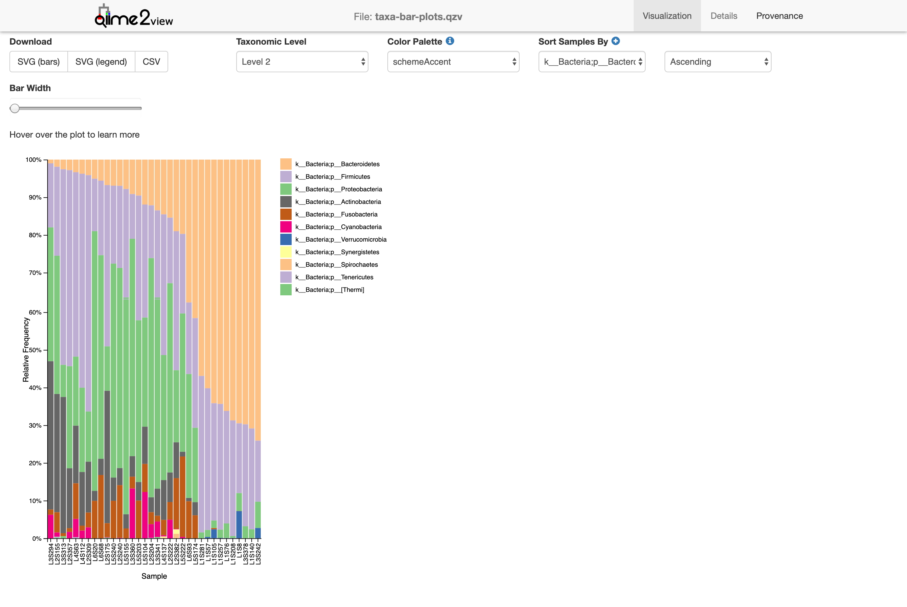
Now we’re looking at the phylum level (level 2). We can start seeing the diversity of microbes in the sample. Level 3!
{kind=link}
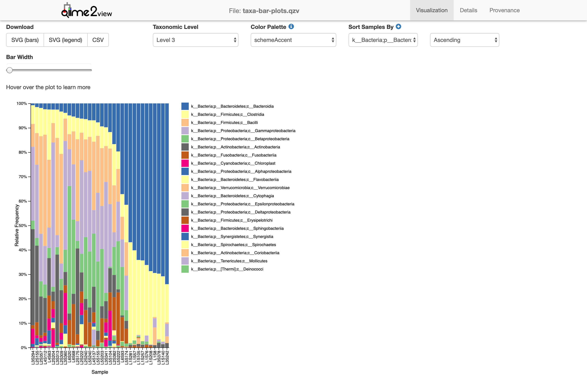
Class. Without going into too many details, you can see how certain groups are distributed differently between samples.